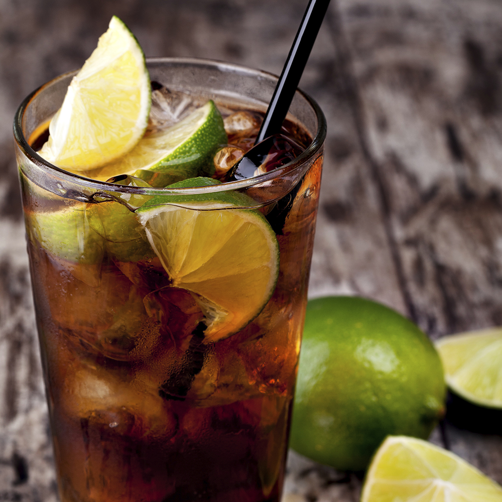
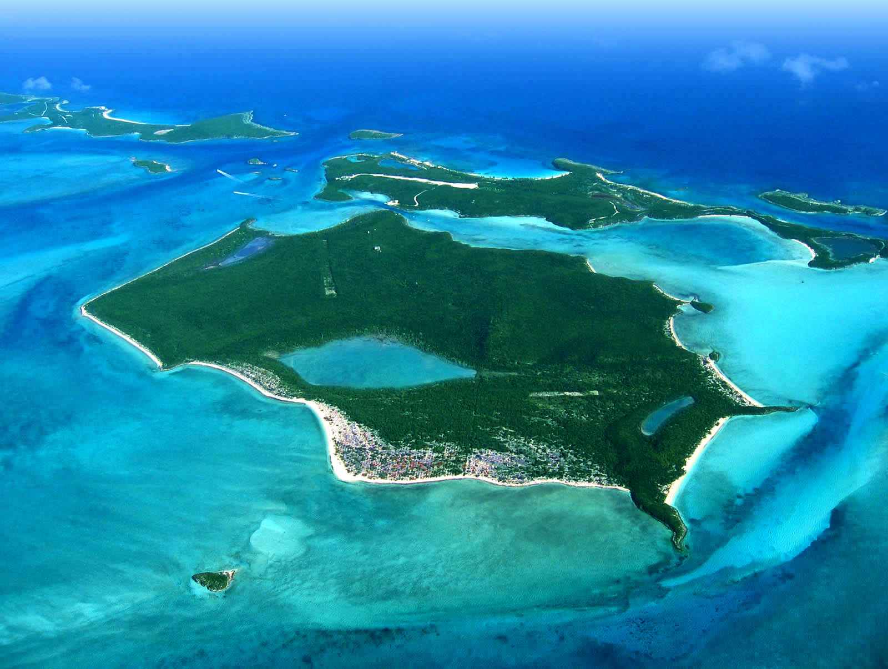

Cuba Libre
The Cuba Libre recipe is an easy and popular mixed drink that you will find very familiar. Translated from Spanish, the name means “Free Cuba,” a phrase that was popularized around the end of the Spanish-American War and used to celebrate that Cuba was freed from Spanish rule. This simple mixed drink is similar to a rum and Coke, but the addition of fresh lime juice lightens up the mix and cuts through the sweetness of the cola. The lime is the single element that defines the Cuba Libre as a separate drink and it should be fresh (not from a bottle) to keep the drink authentic.

The Bahamas
The Bahamas, known officially as the Commonwealth of the Bahamas, is a country within the Lucayan Archipelago, in the Caribbean. The archipelagic state consists of more than 700 islands, cays, and islets in the Atlantic Ocean, and is located north of Cuba and Hispaniola Island, northwest of the Turks and Caicos Islands, southeast of the U.S. state of Florida, and east of the Florida Keys. The capital is Nassau on the island of New Providence. The designation of "the Bahamas" can refer either to the country or to the larger island chain that it shares with the Turks and Caicos Islands. The Royal Bahamas Defence Force describes the Bahamas territory as encompassing 470,000 km2 of ocean space.
